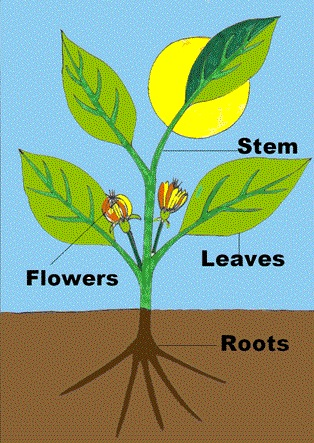

Teaching Point
Students will create the outline for the slides in their Plant Parts Slideshow
The Different Parts of a Plant
Each of the next slides in your Slideshow will be about ond plant part. First we should make our new slides, but only add the title. No need to start writing. We can do that later.
When you are finished with all of your slides your slideshow should have a total of 7 slides:
- Slide 1: Title Slide
- Slide 2: Introduction
- Slide 3: Seeds
- Slide 4: Roots
- Slide 5: Stem
- Slide 6: Flower
- Slide 7: Goodbye Slide
Once you have made your slides, go back to them and write in the details one at a time. You should start by going to slide 3, and writing 4 sentences about seeds. Next go back to slide 4 and write 4 sentences about Roots. Keep going until you get to the end of the slideshow. You can use the links below to help you remember what each plant part does.
Click on any of the slideshares below for a review.


Today's Assignment
First make the rest of your slides, one at a time, with the titles. When you are done, go back and write in the details about each plant part.
Back to School Portal